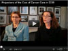
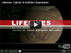

DCCPS Research in the Spotlight
Video Archives
The Future of Cancer Screening: Public Health Approaches |
Did You Know? Key Statistics about Melanoma of the Skin
|
Dr Julia Rowland Discusses the Developing Field of Cancer
Survivorship  |
2012 Update: SEER Cancer Statistics Review, 1979-2009 |
Using Statistical Modeling to Evaluate Tobacco Control Efforts |
Grid-Enabled Measures (GEM) Database: A Community Site for Researchers
|
Extending Cancer Survivorship Through Healthy Lifestyle Interventions |
Paige McDonald, PhD, MPH, discusses the trans-NIH initiative, Basic Behavioral and Social Sciences Opportunity Network (OppNet), and the role of NCI
and DCCPS |
Robin Yabroff, PhD, MBA, sheds light on ongoing DCCPS research pertaining to the burden of cancer, as part of the NCI Cancer Bulletin’s "Profiles in Cancer Research" |

Robin Yabroff, PhD, MBA, and Angela Mariotto, PhD, discuss the projected rise in cancer care costs |
Stephen Taplin, MD, MPH, Senior Scientist, NCI Division of Cancer Control and Population Sciences talks about a new DCCPS funding opportunity, Population-Based Research Optimizing Screening through Personalized Regimens (PROSPR) |
Robin Yabroff talks about how the cost estimates were developed for the Cancer Trends Progress Report |
Brenda Edwards talks about the Annual Report to the Nation and the data collection behind it |
Kathy Cronin discusses CISNET statistical modeling and specifically how it was used to assess harms and benefits of breast cancer screening |
Dr. Pebbles Fagan gives the facts about lung cancer and tobacco for Lung Cancer Awareness Month |
Interview with Eric "Rocky" Feuer, Ph.D., on statistical modeling and breast cancer screening |

Tanya Agurs-Collins, PhD, discusses how to reduce cancer risk through proper diet. The PSA is geared to African American audiences as part of NCIs Lifelines series for multicultural audiences |
|
Back to Communicating DCCPS Research